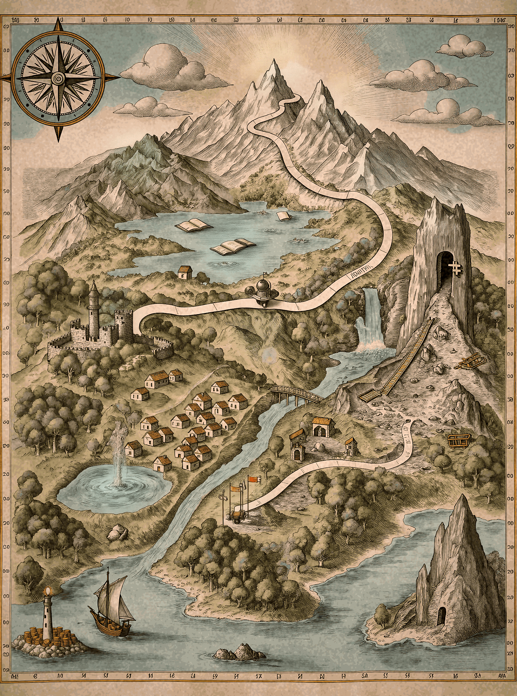

把比特币想象成人类知识大陆上凸起的一座山地。10 个站点串成一条从 现金湾 到 代码之巅 的寻宝路线——越往上，越接近"它到底是什么"。
点击地图上的站点，直达对应学习章节。

从最贴近日常的"钱"，一路攀到最抽象的"代码与协议"。每一站都是理解比特币的一块拼图。
钱的本质是共识。从贝壳到法币，看清你手里那张纸到底值什么、又凭什么值。
钱不是贝壳也不是纸，而是一群人共同相信的故事。先搞清楚它凭什么值钱，才懂比特币究竟在改什么。
银行替我们记账，也替我们担风险。货币的三大历史缺陷，正是比特币要解决的。
没有银行，怎么防止同一笔钱花两次？这是比特币回答的第一个核心难题。
所有人共有一本公开账本，谁都能核对，谁都不能偷偷篡改——区块链由此而来。
哈希函数把任意信息压成固定指纹，是比特币防篡改、串起区块的密码学地基。
成千上万台机器如何就"谁的交易有效"达成一致？工作量证明给出反直觉的答案。
矿工用电力竞争记账权，自私的人性被机制设计成维护网络安全的力量。
一串私钥就是所有权本身。失去它，比特币就永远不再属于你——这是最古老的教训。
站在代码之巅俯瞰：比特币不是一家公司，而是一套谁都无法单方面改写的规则。
这张地图是「比特币学习地图」系列的知识骨架。完整的 38 篇分章内容在 学习区；想从零开始，先读 货币的千年之问。
⚠️ 本文仅作区块链科普，不构成任何投资建议。比特币价格波动剧烈，投资需谨慎。